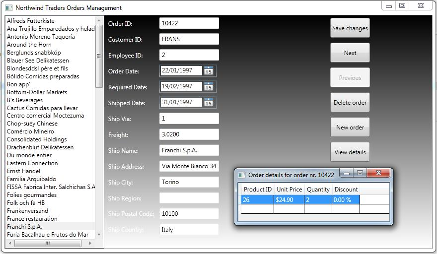

Model-View-ViewModel is an architectural pattern for WPF and Silverlight that helps abstracting the presentation layer from other layers such as the data access and the business logic.
You can successfully use MVVM against the ADO.NET Entity Framework, but there's one thing that you must be aware of: the ViewModel must not know what the underlying data access engine is. For this reason, a good approach is implementing a service layer that will be responsible of interacting with the data source. If one day you'll decide to change the data store, you will edit the service layer but the ViewModel remains unchanged.
There is also another problem with MVVM: opening dialogs; commands are exposed by the ViewModel but this cannot open UI elements, so you need something to solve this problem. You could implement events, but there is another way through messages.
Finally, notice that MVVM makes easier unit testing
This is an advanced example, since you learn:
The source code is in Visual Basic 2010 only. The reason is that the availability of MVVM material in VB has to grow yet.
This is a picture from the final result:
